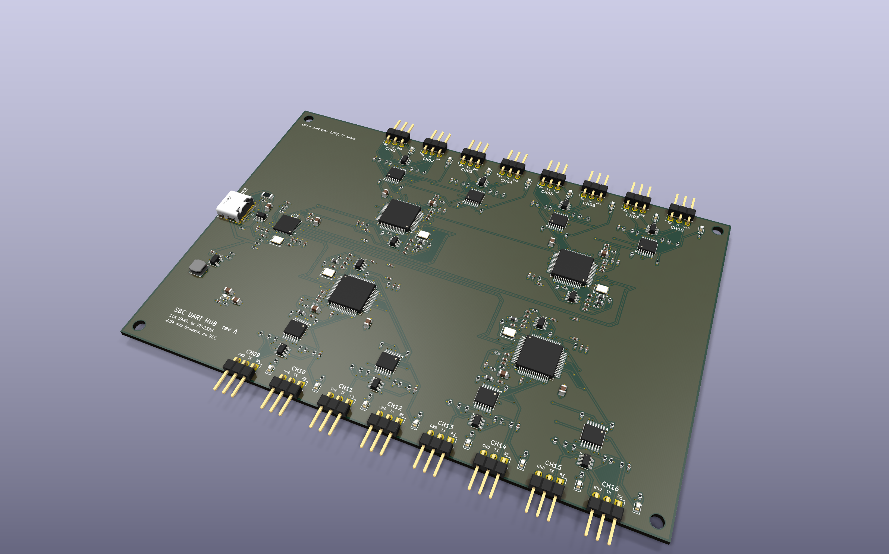
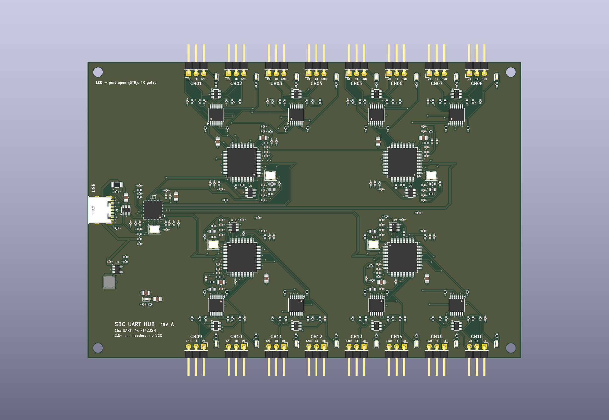
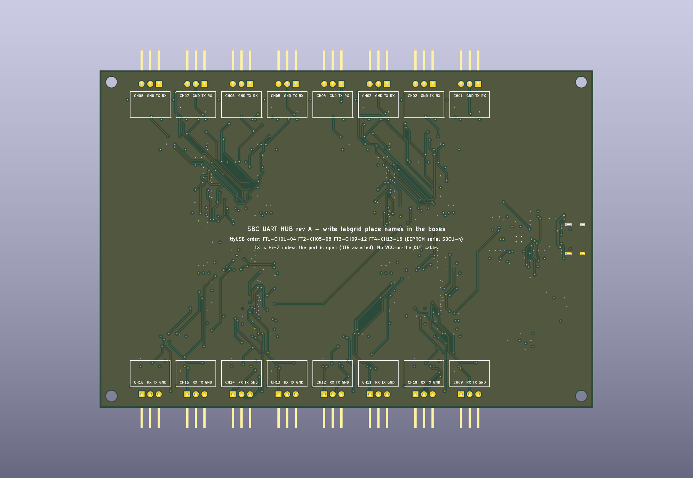

16-channel, DTR-gated, 3.3 V debug-UART adapter on a single USB cable
SBCU-1…SBCU-4) for stable udev namesuhubctl)| Channels | 16 |
| Logic level | 3.3 V LVCMOS |
| Max baud rate | 12 Mbaud |
| Host interface | USB 2.0 HS, USB-C |
| DUT connector | 1×3 2.54 mm, right angle |
| Board size | 146 × 100 × 1.6 mm |
| Layers | 4 |
| Parts cost (5 boards) | ≈ $59 / board |
The SBC UART Hub puts sixteen debug consoles on one USB port. It was designed for a farm of about thirty Allwinner and Rockchip single-board computers. Those boards are power-cycled automatically, and a plain USB-serial adapter would keep feeding current into a powered-off board through its TX pin.
Each channel's TX goes through a tri-state buffer whose output-enable is that channel's DTR# line. When software opens the port, DTR is asserted and TX is driven. When the port is closed, or the adapter is unplugged, TX is high-impedance. RX is buffered the same way, with the buffer always enabled. The 74LVC family's Ioff feature keeps both pins high-impedance when the adapter itself has no power.



The hub ports are not wired in chip order. The order shown (port 4 → FT1, 3 → FT2, 1 → FT3, 2 → FT4) keeps the four USB pairs from crossing on the PCB. It matters only for uhubctl -p.
Design values from component datasheets. Nothing has been measured on hardware yet.
| Parameter | Conditions | Min | Typ | Max | Unit |
|---|---|---|---|---|---|
| Supply voltage (VBUS) | USB-C, bus powered | 4.5 | 5.0 | 5.5 | V |
| Supply current | All 16 ports open, estimate | ≈ 0.4 | A | ||
| Input fuse | PTC hold current | 1.1 | A | ||
| Internal rail | TLV62569 buck, FB 100k/22k | 3.33 | V | ||
| Logic level, TX and RX | LVCMOS | 3.3 | V | ||
| TX series resistance | Buffer output to connector | 220 | Ω | ||
| RX series resistance | Connector to buffer input | 220 | Ω | ||
| RX idle pull-up | Buffer input to 3.3 V | 100 | kΩ | ||
| TX output state, port closed | DTR# high | Hi-Z | |||
| TX/RX state, adapter unpowered | 74LVC125A Ioff | Hi-Z | |||
| Baud rate | FT4232H UART mode | 12 M | baud | ||
| Connector ESD clamp | ESDA6V1-5SC6, to GND | 6.1 | V | ||
| Max power descriptor | Per FT4232H EEPROM | 100 | mA | ||
The hub is strapped for bus-powered mode (CFG_SEL = 10, all ports non-removable). For that reason each FT4232H's EEPROM must declare 100 mA, and the host tooling does this.
| Pin | Signal | Direction |
|---|---|---|
| 1 (square) | RX | DUT TX → adapter |
| 2 | TX | adapter → DUT RX |
| 3 | GND |
LCSC C492411 (PZ254R-11-03P). The pins point out past the board edge. Pin 1 (RX) is on the left for CH01–CH08 and on the right for CH09–CH16, and RX/TX/GND is printed next to every pin. The pin order keeps each signal where it was on the earlier JST-XH layout, so that layout's routing was kept.
Use standard female-to-female Dupont jumper wires, one wire per signal, so any SBC debug-header pin order works. Premium jumpers (for example Pololu, 26 AWG) come in 15, 30, 60 and 150 cm. Use black for GND.
Plugging a wire onto the wrong pin is harmless. No pin carries power, both signal lines have 220 Ω in series and go through a buffer, and a short or a TX-to-TX connection draws at most about 15 mA.
USB-C receptacle (HRO TYPE-C-31-M-12), USB 2.0 only, 5.1 kΩ CC pull-downs. Either cable orientation works.
| Channels | Chip | EEPROM serial | Hub port |
|---|---|---|---|
| CH01–04 | FT1 (U4) | SBCU-1 | 4 |
| CH05–08 | FT2 (U8) | SBCU-2 | 3 |
| CH09–12 | FT3 (U12) | SBCU-3 | 1 |
| CH13–16 | FT4 (U16) | SBCU-4 | 2 |
Within a chip, interfaces A–D (USB interface 00–03) map to the four channels in order. The udev rules create /dev/sbcu/ch01 … /dev/sbcu/ch16.
Red LED D1: 3.3 V present. Green LED per channel: DTR asserted, meaning the port is open and TX is driven.
Top view, dimensions in mm. Connector outlines are nominal. The headers are through-hole and right angle: the plastic body sits flush with the board edge and the pins stick out 6 mm past it, so a Dupont housing plugs in parallel to the board. Every other part is SMD on the top side. Four M3 holes (Ø3.2 mm) sit 3.5 mm in from each corner, and each has a keep-out ring.
| Layer | Use | Thickness |
|---|---|---|
| F.Cu | Signal, components, GND pour | 35 µm |
| PP 7628 | Dk 4.4 | 0.2104 mm |
| In1.Cu | GND plane, solid | 15 µm |
| Core | Dk 4.38 | 1.065 mm |
| In2.Cu | 3.3 V plane | 15 µm |
| PP 7628 | Dk 4.4 | 0.2104 mm |
| B.Cu | Signal, GND pour | 35 µm |
All USB pairs run on F.Cu over the solid In1 GND plane. They use 0.22 mm track with a 0.15 mm gap. Each hub-to-FT pair needs a polarity swap, done with two vias next to the FT chip.
| Model (JLC solver) | Zdiff |
|---|---|
| Coated edge-coupled microstrip | 93.0 Ω |
| Coplanar, GND pour at 0.3 mm | 92.1 Ω |
| Target (USB 2.0) | 90 Ω ± 15 % |
Queried from JLCPCB's impedance calculator backend on 2026-11-08, with JLC's own 1 oz outer-layer and solder-mask parameters.
| Placements (PCBA) | 286 (incl. 16 THT connectors); 4 DNP links |
| Unique BOM lines | 30 |
| Vias | 587 (0.3 mm drill) |
| Minimum track / clearance | 0.12 mm / 0.127 mm |
| Routed copper | ≈ 4.97 m in 2731 segments |
| Finish, mask | JLC defaults; impedance control on |
| Ref | Part | Function | LCSC | Qty |
|---|---|---|---|---|
| U4 U8 U12 U16 | FTDI FT4232HL | Quad USB-UART, LQFP-64 | C56742 | 4 |
| U3 | Microchip USB2514B | 4-port USB 2.0 hub, QFN-36 | C16251 | 1 |
| U6…U19 | 74LVC125APW | Quad tri-state buffer, TX gate + RX buffer | C6059 | 8 |
| U5 U9 U13 U17 | 93LC56B | FT4232H config EEPROM | C190271 | 4 |
| U2 | TI TLV62569DBV | 2 A buck, 5 V → 3.3 V | C141836 | 1 |
| U1 | USBLC6-2SC6 | USB data-line ESD | C7519 | 1 |
| D2…D23 | ESDA6V1-5SC6 | Connector-pin ESD, GND-referenced | C2827672 | 8 |
| J101…J116 | PZ254R-11-03P | 1×3 2.54 mm right-angle header, THT | C492411 | 16 |
| J1 | HRO TYPE-C-31-M-12 | USB-C receptacle | C165948 | 1 |
All parts were in JLCPCB stock for a 5-board run on 2026-11-08. Parts come to about $59 per board, and the four FT4232HL make up about $50 of that. PCB fabrication and assembly fees are extra.
The board is a standard FTDI device and uses the Linux ftdi_sio driver. The host/ directory in the repository provides:
program-eeproms.sh with sbcu-1..4.conf: writes serials SBCU-1…SBCU-4, VCP mode and 100 mA max power, found by hub port70-sbc-uart-hub.rules: stable /dev/sbcu/chNN symlinks from the serial number and USB interface numberlabgrid-exporter.yaml: example exporter with one USBSerialPort per channel$ ls /dev/sbcu/ ch01 ch02 ch03 ch04 ch05 ch06 ch07 ch08 ch09 ch10 ch11 ch12 ch13 ch14 ch15 ch16 $ uhubctl -l <hub> -p 4 -a cycle # hard-reset FT1 (needs R14 fitted)
TX gating relies on the serial port actually being closed between sessions. With ser2net, open the tty only while a client is connected so that DTR drops in between.
| Check | Result | Status |
|---|---|---|
| Schematic ERC (KiCad 9) | 0 violations | Pass |
| PCB DRC with schematic parity | 0 violations, 0 unconnected, 0 footprint errors | Pass |
| USB pair impedance | 92–93 Ω (JLC solver) | Pass |
| JLCPCB stock, 5 boards | All lines in stock | Pass |
| Assembly rotations (CPL) | USB-C, headers, LEDs and crystals to be checked in JLC's PCBA preview | Open |
| Hard reset via hub port power | R14–R17 not fitted; behaviour not verified | Open |
| Hardware bring-up | Enumeration, loopback at 115200 and 1.5 Mbaud, back-power test | After build |
Before the first order, a second opinion is most useful on these points:
Please send comments as GitHub issues on jernejsk/sbc-uart-hub or by reply.
The whole design is generated by scripts: schematic, placement, USB routing, autorouting (Freerouting), silkscreen and fab outputs. The repository README gives the command order.